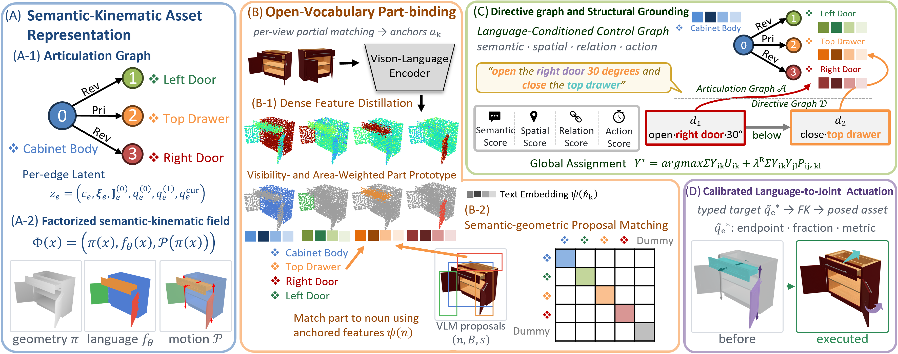
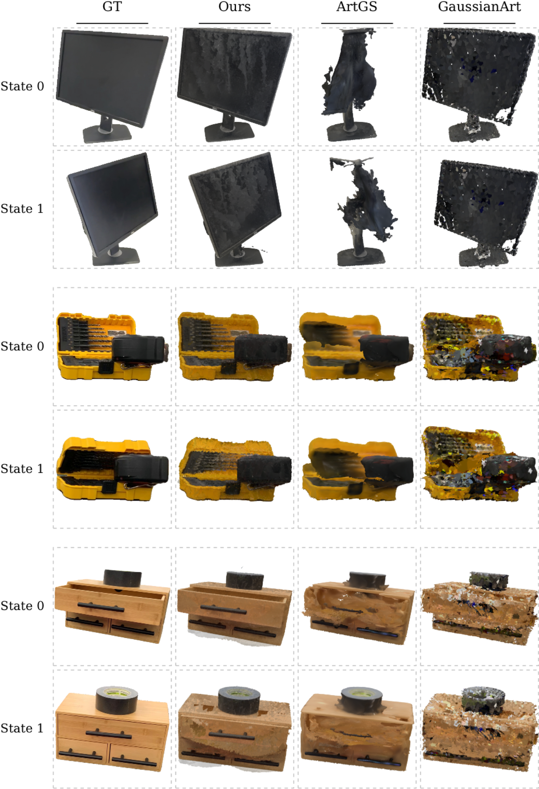

ArtLang is a graph-to-graph pipeline from language to an articulated object's semantic and kinematic structure. (A) A part-aware reconstruction (ArtMesh backend) is represented as an articulation graph with a factorized semantic-kinematic field: every surface point carries its part identity, a distilled language feature, and the graph-constrained motion of its part. (B) Open-vocabulary features and VLM part proposals are bound to persistent parts by semantic-geometric partial matching, giving each part a noun and an FG-CLIP-2 anchor. (C) A typed parser turns the command into a directive graph, which is globally grounded against the articulation graph under semantic, spatial, relational, and action compatibility, with support for null assignments and abstention under ambiguity. (D) Accepted directives are converted to calibrated joint targets inside the observation-supported interval and executed by forward kinematics.

Free-form commands are resolved into (part, joint coordinate) targets and executed as rigid motions — spatial qualifiers disambiguate same-noun parts (left / right / top), magnitude modifiers and explicit angles map onto the calibrated joint interval, multi-directive sentences ground globally, and relational references resolve against the graph. Each clip shows the command and the resulting actuation of the reconstructed model. (Articulate-100 objects are captured with state 0 open, so commands typically close a part.)
The articulation coordinate supports continuous control: a directive selects a part and any value of the actuation parameter t places it along its learned trajectory — t = 0 is the rest state, t = 1 the learned closed state, and negative values extrapolate past the rest pose in the opening direction, through poses never seen at training. Each clip sweeps one part while all others stay at rest; because t scales the learned motion, the sweep doubles as a visual audit of the recovered kinematics.
Given a mesh and a single-view image of the end state, ArtLang recovers the articulated object.
Reconstructing from multi-view observations of the two states, ArtLang matches its ArtMesh backbone on joints and geometry — attaching the language handle costs no reconstruction quality.
The same pipeline applied to real SplArt objects: despite noisier geometry and less clean boundaries than the synthetic set, the semantic and spatial axes still resolve the intended part, and the motion axis actuates it along the recovered joint — a user can address a captured object without touching a joint index.

@article{artlang2026,
title = {ArtLang: Articulation-Structured Language Fields Enable
Language-Guided Articulation Reasoning and Manipulation},
author = {Anonymous Authors},
journal = {Under review},
year = {2026}
}